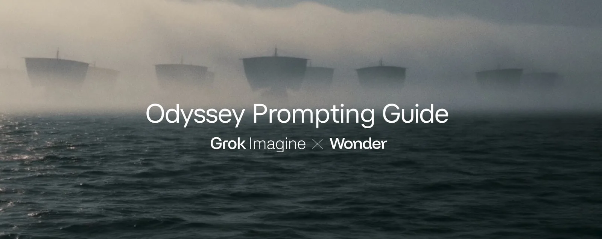
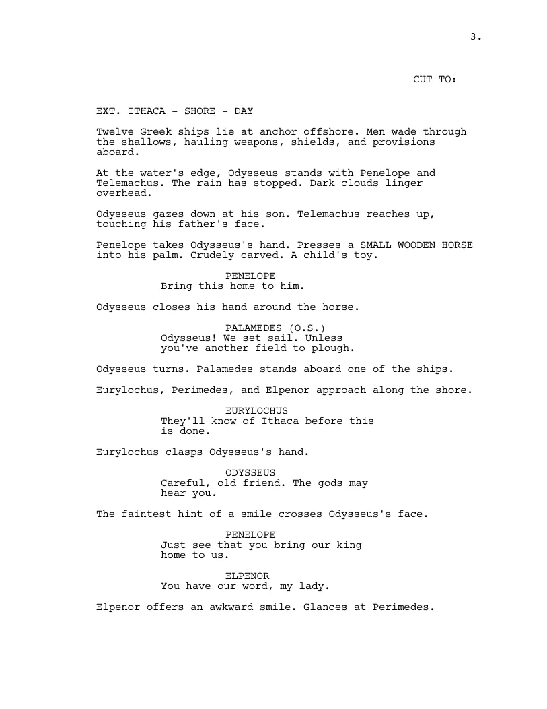
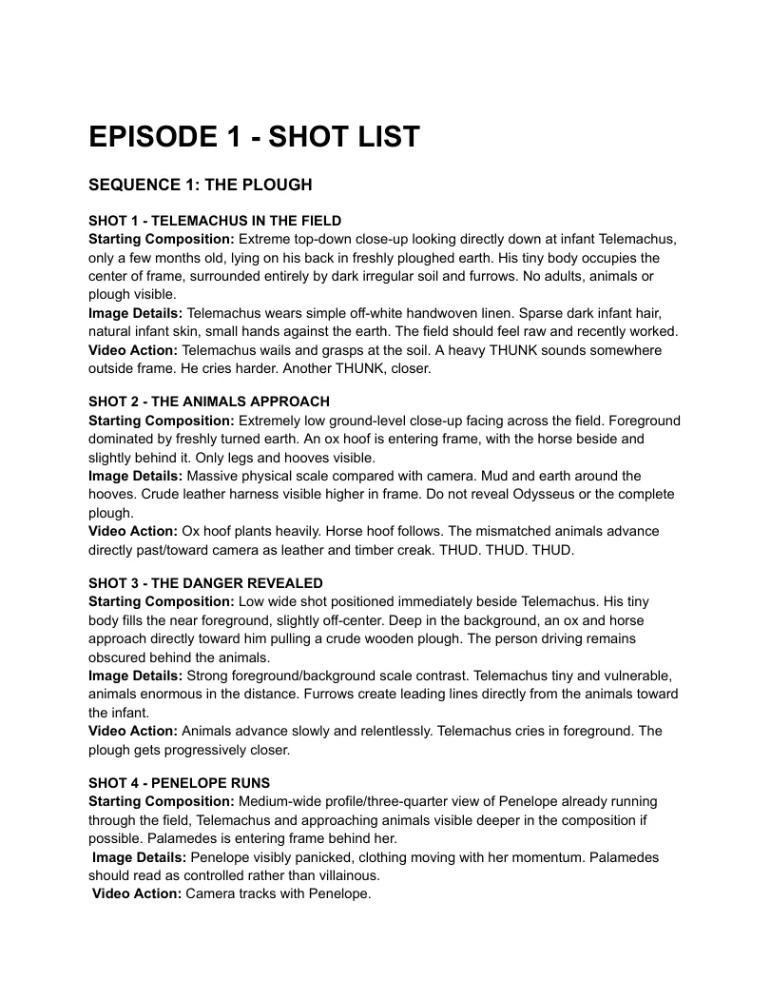
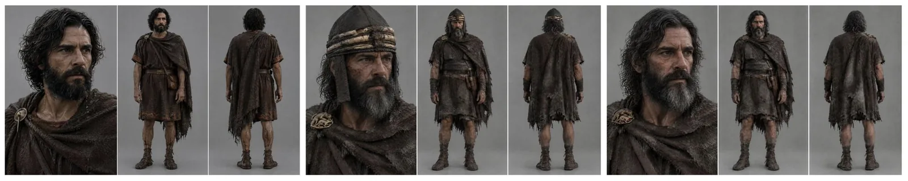
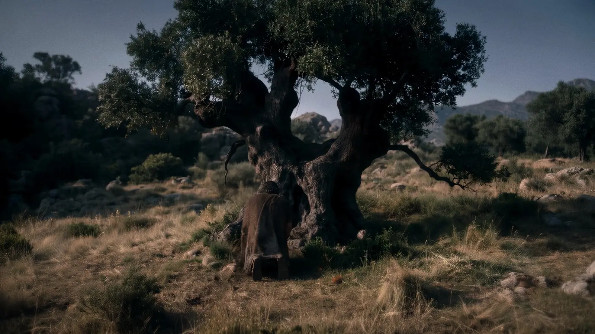
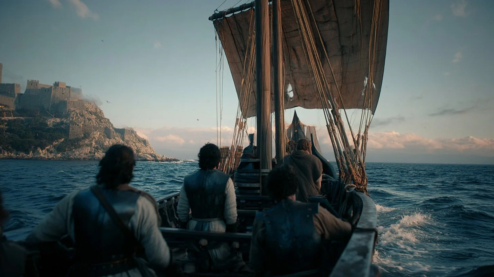
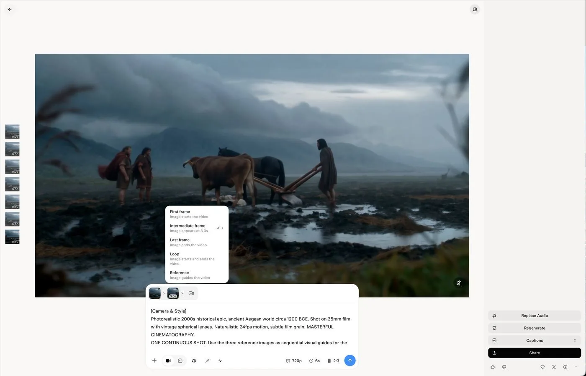
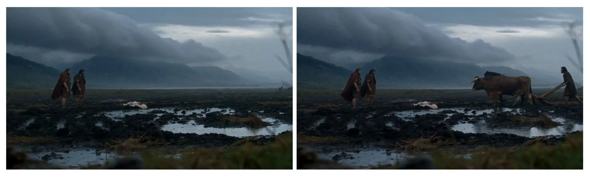
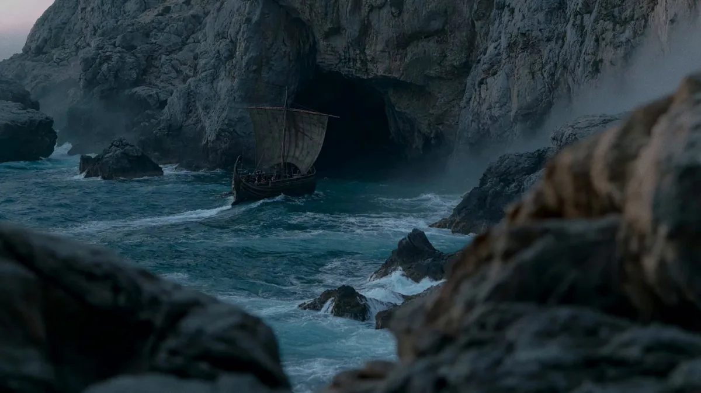

原帖正文：“Our Prompting Guide is live. We're building the Odyssey episodes in public with a small crew of creatives. Learn from our workflows!”（我们的提示词指南上线了。我们正和一个小型创意团队公开制作《奥德赛》系列。来学我们的工作流吧！）
互动数据（2026-10-28 18:05 UTC+8，经 X API 读取）：约 37.9 万次浏览、1,412 赞、185 转帖、62 引用、98 回复、1,438 收藏。
全文翻译：《第 1 集〈誓言〉幕后》
我们把自己从剧本到最终剪辑的工作流分享出来，这样你可以和我们一起学习，并把这些技巧用到你自己的创作项目里。
最近，我们与 Wonder Studios 合作，制作一组取材于《奥德赛》及更广义的“史诗诗系（Epic Cycle）”的短剧。
我们的目标很简单：从电影人那里得到诚实、尖锐的反馈，并用它来改进 Grok Imagine 的图像和视频模型。
我们和一个 3–5 人的小型创意团队一起公开制作这些剧集。每一集的快速周转让我们能快速改进，并把学到的东西分享给任何对在创作中使用 AI 感到好奇的人。
下面，导演 Dev Walker 与 Wonder Studios 团队分享他们在制作第 1 集《誓言》（The Oath）时使用 Grok Imagine 的心得。
写剧本
第 1 集改编自《塞浦路斯之歌》（Cypria）中的一场戏——那是《伊利亚特》已失传的前传。留存下来的只有一段简短的故事梗概：奥德修斯装疯以逃避特洛伊战争，结果被识破。其余的一切，从对白到角色的面孔，都得靠我们去想象。
因为这些剧集发布在社交媒体上，我们原本计划每集控制在 5 分钟左右。之后的几集我们会给更长的时长，让故事和角色有发展空间，不过仍然会是短剧。

列出每一个镜头
在生成任何东西之前，先写分镜表（shot list）。
每一个镜头都要记下景别、镜头焦段、摄影机运动、动作和准确的对白。你写得越具体，结果就越一致。
从一开始就把文件整理好。文件夹先按场次命名，再按 A-roll 或 B-roll 分，例如 SCENE1_FIELD_BROLL。当你每个镜头要生成几十条素材时，这会让你在剪辑时找到正确片段容易得多。

使用 Grok Imagine 的 Canvas（画布）
把一切放在同一张画布上。每一帧、每条提示词、每一条素材都放在那里，按镜头分组。把多条素材并排摆放，挑出最好的一条，并检查整场戏的连续性：面孔、服装、光线。
做角色设定图
保持简单。一张特写、一张正面全身、一张背面全身，纯灰底。
如果角色变老或换服装，就做一张新的设定图。
比如，奥德修斯就有三张。

写角色提示词
角色提示词有助于让他在每个镜头里保持同一张脸。你仍然会偶尔看到面部漂移，不过下面是我们给奥德修斯用的提示词示例。
An ultra-photorealistic cinematic character reference sheet for ODYSSEUS, King of Ithaca, ancient Mycenaean Greece circa 1200 BCE.
CHARACTER: Rugged Greek man, late 30s to early 40s, olive skin, strong Mediterranean features, deep-set brown eyes, prominent nose, shoulder-length wavy black hair, thick full black beard. Lean, muscular build. Weathered, intelligent face with a serious, commanding expression.
COSTUME: Dark brown knee-length wool tunic with subtle embroidered trim, weathered dark leather scale armor, leather belt, forearm bracers, wrapped leather boots, and a short bronze sword in a leather scabbard. A heavy charcoal-brown wool cloak draped asymmetrically over his shoulders, fastened with an ornate golden brooch depicting a hunting dog gripping a spotted fawn in its forepaws, the fawn struggling to escape, intricately sculpted in raised gold. The brooch is prominently visible on his right shoulder. Authentic handmade materials, worn leather, heavy textured wool, aged bronze.
LAYOUT: Single wide 16:9 image divided into THREE VERTICAL PANELS with thin white dividing lines.
LEFT: Large three-quarter facial close-up, looking slightly toward frame right. Detailed facial features, hair, beard, cloak, and gold fawn brooch.
CENTER: Full-body FRONT VIEW, standing naturally with arms relaxed, entire costume visible from head to boots.
RIGHT: Full-body BACK VIEW, showing the cloak's full drape, hairstyle, and footwear.
All three panels must depict the EXACT SAME MAN wearing the EXACT SAME COSTUME, with identical proportions, materials, and accessories.
PHOTOGRAPHY: Professional Hollywood costume reference photography. Neutral medium-gray seamless studio background, soft diffused studio lighting, natural skin texture, realistic fabric and leather detail, subtle film grain. Grounded historical realism, not fantasy.
STRICTLY PHOTOREALISTIC. No illustrations, no CGI appearance, no text, no labels, no additional characters.角色提示词中译
一张超写实的电影级角色参考设定图：奥德修斯（ODYSSEUS），伊萨卡国王，约公元前 1200 年的迈锡尼时代古希腊。
角色：粗犷的希腊男子，三十多岁末到四十出头，橄榄色皮肤，鲜明的地中海五官，深陷的棕色眼睛，鼻梁突出，及肩的黑色波浪长发，浓密的黑色络腮胡。精瘦而有肌肉。饱经风霜、透着聪慧的脸，表情严肃、威严。
服装：深棕色及膝羊毛束腰外衣，带细微的刺绣滚边；磨旧的深色皮革鳞甲、皮带、护臂、缠绑式皮靴，以及插在皮鞘里的青铜短剑。一件厚重的炭棕色羊毛斗篷不对称地披在双肩，用一枚华丽的金色胸针固定，胸针图案是一只猎犬用前爪抓住一头带斑点的小鹿、小鹿挣扎欲逃，以浮雕金工精细雕刻。胸针在他右肩上清晰可见。真实的手工材质：磨旧的皮革、厚重粗纹的羊毛、氧化的青铜。
版式：单张 16:9 宽幅图，用细白线分成三个竖向面板。左：大尺寸四分之三侧脸特写，视线略朝画面右侧，展示面部细节、头发、胡须、斗篷和金色小鹿胸针。中：正面全身，自然站立、双臂放松，从头到靴的整套服装可见。右：背面全身，展示斗篷完整的垂坠、发型和鞋履。三个面板必须是完全同一个人穿完全同一套服装，比例、材质与配饰一致。
摄影：专业好莱坞服装参考摄影。中性中灰无缝影棚背景，柔和漫射的影棚光，自然的皮肤质感，真实的织物与皮革细节，轻微胶片颗粒。扎实的历史写实，不是奇幻。
严格照片级写实。不要插画、不要 CGI 感、不要文字、不要标注、不要额外角色。
搭建场景
第 1 集有五个场景：
- 田野
- 宫殿
- 海岸
- 船上
- 特洛伊城外的营地
每一条提示词都写明景别、时段、氛围、摄影机、镜头和胶片型号。

让所有镜头保持同一种影调
从一张情绪板或一张风格参考图出发，然后在每一条提示词里都写明摄影机、镜头和胶片型号。
我们在提示词里没有点名任何导演；影调来自 2000 年代初的古装史诗片。
做关键帧
把设定图里的角色放进每个相关场景，得到你要拿去做动画的关键帧。如果静帧不对，动画视频也不会对。我们建议先花时间确保关键帧镜头足够好，再进入动画环节。

把视频提示词分块写
用 7 个块：
- 摄影机（camera）
- 动作（action）
- 环境（environment）
- 物理（physics）
- 音频（audio）
- 音效（SFX）
- 约束（constraints）
如果一条提示词失败了，就把它写短。更多细节很少能解决问题。
下面是我们开场镜头的完整提示词。
[Camera & Style]
Photorealistic 2000s historical epic, ancient Aegean world circa 1200 BCE. Shot on 35mm film with vintage spherical lenses. Naturalistic 24fps motion, subtle film grain. MASTERFUL CINEMATOGRAPHY.
ONE CONTINUOUS SHOT. Use the three reference images as sequential visual guides for the action. Preserve the EXACT camera composition, perspective, landscape, lighting, and character appearances.
EXTREME WIDE SIDE PROFILE. Completely STATIC, LOCKED-OFF CAMERA. No camera movement throughout the shot.
[Subject Motion / Action]
The shot begins matching IMAGE 1.
FRAME LEFT: Menelaus and Palamedes stand together in the muddy field, watching toward FRAME RIGHT. Their bodies remain mostly still as strong gusts of wind blow their heavy cloaks.
CENTER: Infant Telemachus lies on a cream linen blanket directly on the flat muddy ground, surrounded by shallow puddles.
FRAME RIGHT: The black horse and brown ox gradually enter from OFFSCREEN RIGHT, walking toward FRAME LEFT.
The BROWN OX is closest to camera, with the BLACK HORSE walking alongside it on the far side.
Their movement progresses naturally through the composition shown in IMAGE 2.
Odysseus follows behind the animals, gripping BOTH wooden handles of the primitive plough.
By the end of the shot, the composition matches IMAGE 3, with Odysseus, the plough, and both animals fully visible.
The animals continue walking slowly toward FRAME LEFT, pulling the plough through the thick mud.
Palamedes and Menelaus remain standing together, watching their approach.
[Environment & Atmosphere]
Heavy rain falls continuously across the vast, desolate agricultural field.
Strong, irregular gusts of wind sweep across the landscape.
CRITICAL: THE WIND VISIBLY BLOWS THE MEN’S CLOAKS.
Menelaus’ dark red cloak billows and flutters in the wind. Palamedes’ dark brown cloak moves naturally around his body.
Odysseus’ dark cloak also blows and ripples as he walks behind the plough.
CRITICAL: THE PLANTS AND TALL GRASS IN THE EXTREME FOREGROUND SWAY AND WHIP NATURALLY IN THE WIND.
The blurred foreground vegetation bends under stronger gusts, then partially returns upright. Individual stems and leaves move independently.
Rain falls diagonally during stronger gusts.
Dark storm clouds hang over the distant mountains. Atmospheric mist softens the horizon.
[Physics & Details]
Realistic animal walking mechanics and weight distribution.
The brown ox and black horse move together at a steady pace, their hooves sinking into the saturated soil.
Mud compresses beneath their weight. Small splashes and displaced water accompany each step.
The wooden plough remains physically connected to both animals and cuts through the muddy earth.
Odysseus maintains a firm grip on both handles while walking behind it.
Clothing responds realistically to changing wind intensity. Heavy, rain-soaked wool moves with believable weight and resistance.
Foreground plants react continuously to the wind, with occasional stronger gusts producing more pronounced movement.
Rain creates visible ripples across puddles and runs naturally over the muddy furrows.
[Audio]
NO MUSIC. NATURAL SOUND ONLY. NO DIALOGUE.
Heavy rainfall, gusting wind, distant thunder, animal breathing, hooves squelching through mud, wooden plough creaking, and wet footsteps.
[SFX]
Wind rushing through foreground vegetation, rain striking puddles, wet fabric flapping during stronger gusts, subtle harness creaking, and mud displacement beneath the animals’ hooves.
[Restrictions / Constraints]
ONE CONTINUOUS SHOT. NO CUTS.
IMAGE 1 IS THE EXACT STARTING COMPOSITION.
IMAGE 2 ESTABLISHES THE ANIMALS ENTERING FRAME.
IMAGE 3 IS THE EXACT ENDING COMPOSITION.
STATIC LOCKED-OFF CAMERA THROUGHOUT.
NO PAN, TILT, ZOOM, DOLLY, TRACKING, OR CAMERA SHAKE.
PRESERVE THE EXACT LANDSCAPE AND FRAMING.
MENELAUS AND PALAMEDES REMAIN FRAME LEFT.
TELEMACHUS REMAINS CENTER.
ODYSSEUS AND ANIMALS ENTER FROM FRAME RIGHT.
THE BROWN OX MUST BE CLOSEST TO CAMERA.
THE BLACK HORSE MUST BE FARTHER FROM CAMERA.
ODYSSEUS ALWAYS WALKS BEHIND THE PLOUGH HOLDING BOTH HANDLES.
THE ANIMALS MUST WALK TOWARD FRAME LEFT.
ALL CHARACTERS AND ANIMALS MUST BE FULLY VISIBLE BY THE FINAL FRAME.
HEAVY RAIN THROUGHOUT.
STRONG WIND MUST VISIBLY MOVE THE MEN’S CLOAKS.
FOREGROUND PLANTS MUST SWAY AND BEND IN THE WIND THROUGHOUT THE SHOT.
REALISTIC WIND AND FABRIC PHYSICS.开场镜头提示词中译
【摄影机与风格】照片级写实的 2000 年代古装史诗片，约公元前 1200 年的古爱琴海世界。35mm 胶片拍摄，复古球面镜头。自然的 24fps 运动，轻微胶片颗粒。大师级摄影。一个连续镜头。把三张参考图作为动作的顺序视觉指引。严格保持摄影机构图、透视、地貌、光线和角色外观。大远景侧面。完全静止、锁定的机位。整个镜头中摄影机不动。
【主体运动 / 动作】镜头开始时与图 1 一致。画面左：墨涅拉俄斯与帕拉墨得斯并肩站在泥泞田野中，望向画面右侧；身体基本不动，强阵风吹动他们厚重的斗篷。中央：婴儿忒勒马科斯躺在一块米色亚麻毯上，直接放在平坦的泥地上，四周是浅水洼。画面右：黑马和棕牛从画外右侧逐渐入画，朝画面左侧走。棕牛离镜头最近，黑马在它远侧并行。它们的运动自然推进到图 2 所示的构图。奥德修斯跟在牲口后面，双手握住原始木犁的两个把手。镜头结束时构图与图 3 一致，奥德修斯、犁和两头牲口完全可见。牲口继续缓慢朝画面左侧走，拖着犁穿过厚泥。帕拉墨得斯和墨涅拉俄斯仍并肩站着，看着他们走近。
【环境与氛围】大雨持续落在辽阔荒凉的农田上。强烈而不规则的阵风扫过大地。关键：风要明显吹动男人们的斗篷。墨涅拉俄斯的暗红斗篷在风中鼓起、翻飞；帕拉墨得斯的深棕斗篷自然地在身侧摆动；奥德修斯在犁后行走时，深色斗篷也随风起伏。关键：极前景的植物和高草要在风中自然摇摆、抽打。虚焦的前景植被在强阵风下弯折，再部分弹回；每根茎叶各自运动。强阵风时雨斜着下。远山上压着乌黑的暴风云，大气雾霭柔化了地平线。
【物理与细节】真实的动物行走力学与重心分布。棕牛和黑马以稳定步速一起前进，蹄子陷进吸饱水的泥土。泥在重压下被挤实，每一步伴随小水花和被排开的水。木犁始终与两头牲口物理相连，切开泥地。奥德修斯在后面行走时双手牢握两个把手。衣物随风力变化真实响应，浸透雨水的厚羊毛有可信的重量与阻力。前景植物持续对风作出反应，偶尔的强阵风带来更明显的动作。雨在水洼上激起可见涟漪，并自然地流过泥泞的犁沟。
【音频】无音乐。只有自然声。无对白。大雨、阵风、远处雷声、动物呼吸、蹄子踩进泥里的咕唧声、木犁吱嘎、潮湿的脚步声。
【音效】风穿过前景植被的呼啸、雨打水洼、强阵风时湿布拍打、轻微的挽具吱嘎声、牲口蹄下泥土被挤开的声音。
【限制 / 约束】一个连续镜头，不剪切。图 1 是确切的起始构图；图 2 确立牲口入画；图 3 是确切的结束构图。全程静止锁定机位；不摇、不俯仰、不变焦、不推轨、不跟拍、不抖动。保持确切的地貌与取景。墨涅拉俄斯和帕拉墨得斯保持在画面左；忒勒马科斯保持在中央；奥德修斯和牲口从画面右入画。棕牛必须离镜头最近，黑马必须离镜头更远。奥德修斯始终在犁后、双手握着两个把手行走。牲口必须朝画面左侧走。最后一帧时所有角色和牲口必须完全可见。全程大雨。强风必须明显吹动男人们的斗篷。前景植物在整个镜头中必须随风摇摆弯折。真实的风与布料物理。
使用中间关键帧
Grok Imagine 允许你在首帧和尾帧之间再加一帧。
你可以选择它出现的确切时间点。
比如，我们需要奥德修斯扶着犁准时入画时，就用了这个功能。


把摄影机写进每一条提示词
用静止机位交代场景。打斗开始时改用手持。
这是我们常用的手持镜头提示词：
Unstabilized handheld combat camera POV, violent jagged shake, the camera swinging, rolling and tilting wildly, the horizon tipping off-level with every stride, hard vertical bounces, sudden sideways whips, lurching drops and jolts, focus hunting and snapping, the frame barely holding the chaos. Chaotic, never aligned, never smooth, like a camera held by someone crouching inside a shadowed threshold tracking urgent movement. Fast, urgent, real-time speed, no slow motion.（中译）未加稳定的手持战斗摄影机主观视角，剧烈、参差的抖动，摄影机疯狂地摆动、翻滚、倾斜，地平线随每一步歪斜失衡，强烈的上下颠簸，突然的横向甩动，踉跄的下坠与震动，焦点来回搜寻、骤然咬合，画面勉强兜住混乱。混乱、从不对齐、从不平滑，就像一个蹲在阴暗门槛里的人举着摄影机追踪急促的动作。快速、紧迫、实时速度，不要慢动作。
在剪辑中完成
剪辑、声音和调色大约花了 18 小时。大多数音效直接来自 Grok Imagine。我们在此之上加了音乐和调色。
现在轮到你了！
去拍那部一直卡在你脑海里的短片吧，一直做下去，直到它看起来就是你想象中的样子。
在这里观看第 1 集《誓言》。
在 grok.com/imagine 试用 Grok Imagine。

作者回复与评论区
- 作者回复：经 X API 检索
conversation_id:2115214583983935517 from:imagine（2026-10-28 18:05 UTC+8），@imagine 未在该串下回复或补充。 - 相关前帖：2026-10-24 03:23（UTC+8）@imagine 发布第 1 集正片，称与 @WonderStudiosX 及导演 Dev Walker @glumlot_ 合作，并问观众“是否想看完整制作拆解”——本文即兑现；该帖约 785 万浏览、2.4 万赞、1.5 万收藏。
- 评论区摘选（意译）：合作方 @WonderStudiosX 表示“很高兴和 @imagine 团队合作，这始终是关于回馈创意社区”；@KarunakarGautam 问“对白场景里如何让声音跨镜头保持一致？”（截至读取时未见官方回答）；@yousieve 建议 Canvas 支持以剧本 Markdown 一次导入所有场景、角色与动作，并支持场景的链接与分支；也有批评声音，如有人认为成片“有《使命召唤》的灵魂”、有人质疑“小团队”的挑选方式。
读后注记
- 性质：这是 Grok Imagine（xAI）官方账号发布的制作指南，兼具教程与产品推广性质；文中关于 Canvas、中间关键帧、“大多数音效直接来自 Grok Imagine”等功能描述均为官方自述，本站未实测。
- 可复用的方法（与具体模型无关）：先剧本/分镜表后生成；按场次与 A/B-roll 命名素材；三栏灰底角色设定图；每条提示词固定写景别/时段/氛围/机位/镜头/胶片；关键帧先行；7 段式视频提示词；“失败就写短”；静止机位交代、手持表现打斗。
- 史实：《塞浦路斯之歌》（Cypria）确为史诗诗系中已佚的一部，仅凭普罗克洛斯（Proclus）的《文选》摘要等残篇流传；奥德修斯装疯、被帕拉墨得斯以婴儿忒勒马科斯识破的情节见于该摘要及后世神话汇编。剧中对白与人物外貌为制作团队创作。
- 数据未核实：“3–5 人团队”“剪辑/声音/调色约 18 小时”为官方自述；生成次数、总成本、用时未披露。
- 配图：文中剧本页、分镜表、角色设定图、场景/关键帧与界面截图均为原文配图，已转为 WebP 转载；第 1 集仅使用视频封面帧，未下载视频。